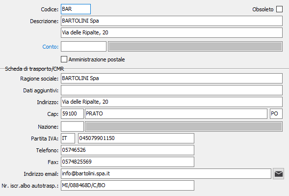

Spedizionieri
La tabella, che può essere attivata dagli utenti che utilizzano le procedure Vendite e Ordini, consente di memorizzare i vettori che vengono inseriti nei documenti. A ciascun codice, su tre caratteri alfanumerici, può corrispondere la ragione sociale e l'indirizzo di un corriere o spedizioniere.
Se l'utente non ha interesse a questa prestazione, può omettere sia la creazione della tabella, sia l'inserimento dei relativi codici nell'anagrafica di clienti o fornitori.

CODICE: codice alfanumerico di 3 caratteri per identificare lo Spedizioniere in esame. Sul campo sono attive le funzioni di ricerca (F9) sulla tabella stessa.
DESCRIZIONE: campo alfanumerico di 50 caratteri per descrivere lo Spedizioniere.
DESCRIZIONE 2: ulteriore campo alfanumerico di 50 caratteri per descrivere lo Spedizioniere.
CONTO: codice alfanumerico di 8 caratteri, presente nella tabella Fornitori, assegnato allo Spedizioniere in esame. Sul campo sono attive le funzioni di ricerca (F9) sulla tabella Fornitori.
AMMINISTRAZIONE POSTALE: flag significativo solo per gli utenti che dispongono del modulo Gestione Corrieri. Se attivo, definisce lo spedizioniere in esame come Amministrazione postale.
campi scheda di trasporto/CMR: In relazione alla compilazione della scheda di trasporto e/o del documento CMR sono presenti i dati anagrafici ed il numero di iscrizioni all’albo degli autotrasportatori, che saranno riportati nelle schede e sul CMR.
OBSOLETO: flag attivabile dall’utente per inibire il possibile utilizzo dell’elemento di tabella in esame nelle successive transazioni.